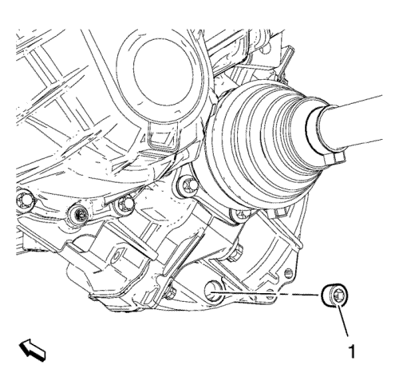
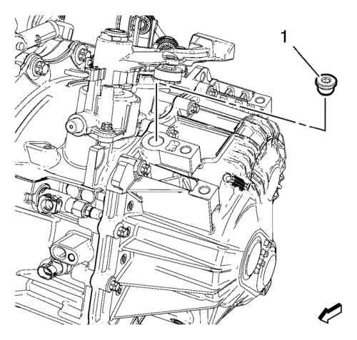

Inspección del nivel del aceite del cambio
Procedimiento de desmontaje
Nota: El tapón de aceite en la parte delantera de la caja de cambios no debe ser abierto.
- Elevar el vehículo y soportarlo de manera segura. Consultar Elevación del vehículo con un gato .
- Coloque un recipiente bajo el vehículo.
- Limpie toda la suciedad y los residuos de la zona del tapón de vaciado del líquido del cambio.

Nota: DESECHE el tapón de vaciado de fluido.
- Quite el tapón de vaciado de aceite del cambio (1).
- Deje que el fluido del cambio salga durante 10 minutos.
Procedimiento de montaje
Precaución: Consulte Precaución con las fijaciones en la sección Prólogo
- Monte el NUEVO tapón de drenaje del aceite del cambio y apriételo a 20 N·m (15 lib. pie).
- Bajar el vehículo.
- Desmonte la bandeja de la batería. Consultar Sustitución de la bandeja de la batería .
- Limpie toda la suciedad y los residuos de la zona del tapón de del líquido del cambio.

Nota: DESECHE el tapón de llenado de líquido.
- Quite el tapón de llenado de aceite del cambio (1).
- Añada aceite del cambio. Para información sobre la capacidad de llenado con aceite del cambio y especificaciones, consulte Especificaciones del cambio manual .
- Monte un NUEVO tapón de llenado del aceite del cambio y apriételo a 30 N·m (22 lib. pie).
- Monte la bandeja de la batería. Consultar Sustitución de la bandeja de la batería .
| © Copyright Chevrolet. Reservados todos los derechos |